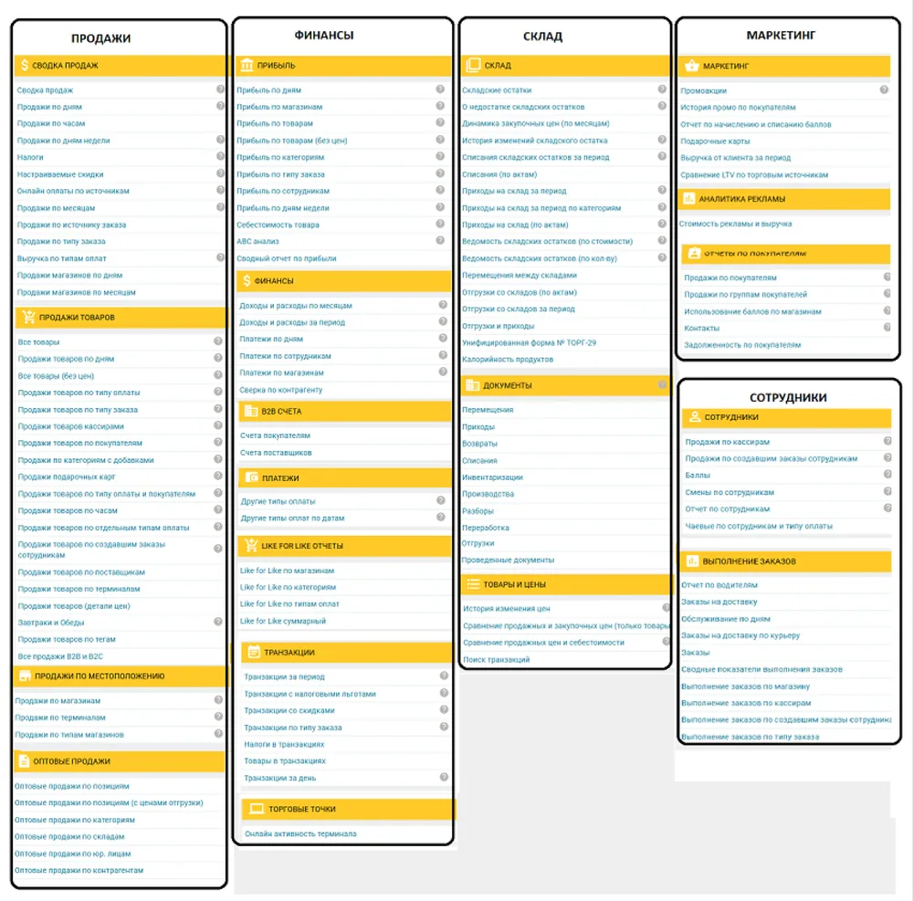
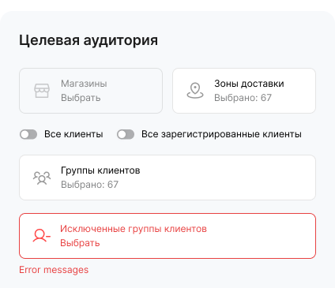
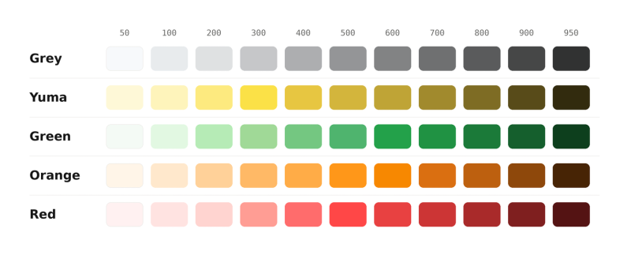
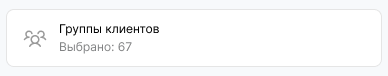
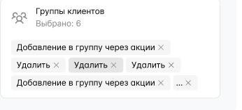
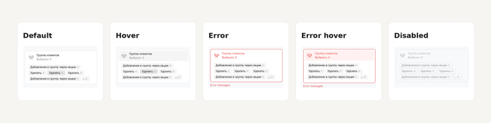
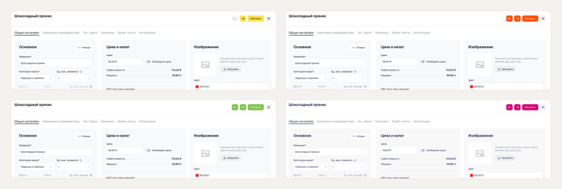

YUMA Back Office
Задача
Обновить бэк-офис, в котором формы, отчёты и настройки со временем стали выглядеть по-разному.
Решение
Сгруппировала поля карточки товара, уточнила навигацию в отчётах и описала общие правила для компонентов и цвета.

Меню, остатки и продажи
Контекст
Эти задачи требуют разных экранов: формы для редактирования товара, списков для выбора параметров и каталога отчётов. По мере роста продукта у экранов появились свои правила оформления. Мне нужно было обновить интерфейс и задать общие правила для элементов, которые повторяются из раздела в раздел.
Моя роль. Визуальная концепция, UI-дизайн, компоненты и их состояния, семантическая палитра и документация.
Поля сгруппированы по задачам
Карточка товара
В прежней карточке настройки товара шли на одном полотне. В новом макете я сгруппировала поля по тому, что управляющий хочет изменить: основные сведения, цена и налог, доступность, опции, изображение и SEO. Названия блоков помогают быстро определить, куда смотреть.

Поля и настройки расположены на одном полотне.

Поля сгруппированы по задачам.
Поиск отчёта в два шага
Отчёты
В старом каталоге жёлтые плашки выделяли почти все группы. В новой версии я сделала верхний уровень заметнее: «Продажи», «Финансы», «Склад», «Маркетинг» и «Сотрудники» различаются по цвету и иконке. Внутри каждой группы названия отчётов остались обычными ссылками.

Жёлтые заголовки одинаково выделяют разные группы.

Цвет и иконка помогают различить разделы.
Общие правила интерфейса
Дизайн-система
Компоненты
Multi Select в настройках целевой аудитории

Цветовые токены

Типографика
Inter · Roboto Mono
Иконки
Мультивыбор в промоакциях
Multi Select
В настройках промоакции одни списки стоят рядом, другие занимают всю строку. Для длинных списков я оставила счётчик выбранного. В варианте с тегами видно до пяти позиций, и каждую видимую позицию можно убрать прямо из поля.
Для обоих вариантов описала обычное состояние, наведение, ошибку и недоступность. На форме их можно увидеть рядом: поле магазинов недоступно, зоны доставки уже выбраны, а у исключённых групп показана ошибка.



Цветовые темы для разных брендов
Семантика цвета
Семантические токены привязаны к ролям в интерфейсе. Чтобы адаптировать бэк-офис под другой бренд, достаточно поменять значения токенов в теме. Компоненты подхватят новые цвета.

Макеты и правила для команды
Результат
Я подготовила макеты и гайды, в которых команда может сверить вариант компонента, его состояния и назначение цвета. Эти правила можно применять к новым формам и таблицам по мере развития бэк-офиса.